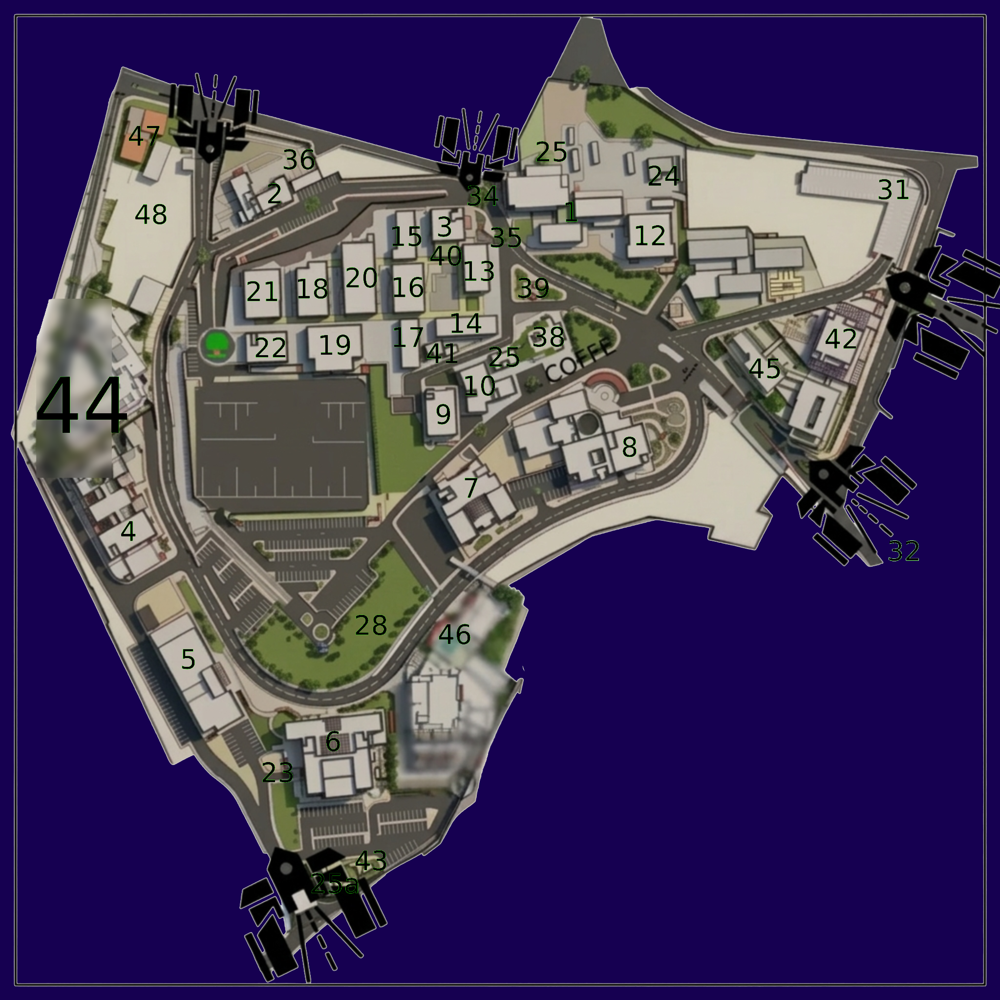

نسخة نهائية بالصورة الواقعية: بحث ذكي، تنقل بين المباني، طوابق، مسار تقريبي، ووضع ليلي

| 1 | رئاسة الجامعة |
| 2 | الأمانة العامة |
| 3 | كلية التخطيط والادارة |
| 4 | كلية الهندسة |
| 5 | المشاغل الهندسية |
| 6 | كلية الأمير عبد الله بن غازي للعلوم وتكنولوجيا المعلومات |
| 7 | مجمع القاعات التدريسية |
| 8 | المكتبة المركزية |
| 9 | كفتيريا الطلبة |
| 10 | مركز الحاسوب |
| 12 | مبنى صالة الضيافة وكفتيرية الموضفين |
| 14 | مبنى الإدارة كلية السلط |
| 15 | مبنى ب |
| 16 | الأكاديمية الإلكترونية |
| 17 | مبنى أ |
| 18 | المبنى التجاري |
| 19 | مبنى الصالة الرياضية |
| 20 | مختبرات |
| 21 | مبنى قاعة الندوات |
| 22 | كلية الزراعة التكنولوجية |
| 23 | مدخل كلية الأمير عبد الله |
| 24 | مبنى العمادة |
| 25 | وحدة الخدمات العامة |
| 25a | ملحق خدمات |
| 28 | مهبط الطائرات |
| 32 | البوابة الرئيسية |
| 34 | مدخل الرئاسة |
| 35 | مدخل كلية التخطيط |
| 36 | مدخل اللوازم المستودعات |
| 38 | المسجد |
| 39 | صرح الجامعة |
| 40 | مركز التطوير وضمان الجودة |
| 41 | الامن الجامعي |
| 42 | مبنى الاكاديمية |
| 43 | مبنى قسم الحركة |
| 44 | كلية السلط التقنية |
| 45 | كلية الأعمال |
| 46 | كلية الطب |
| 47 | مركز الدفاع المدني |
| 48 | كلية الذكاء الاصطناعي |